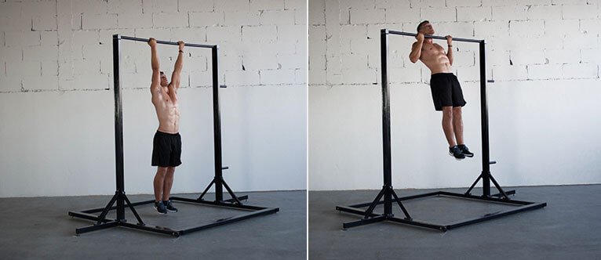

Pull-Ups - Your weapon in the bicep growth battle
Instructions: Hold onto a pull-up bar with a shoulder-width grip and your palms facing you. Squeeze your shoulder blades together and drive your elbows down, pulling your chest towards the bar. Pause at the top for one second. Lower yourself under control for a four count. Repeat for four sets of six to eight reps, resting 90 seconds between sets.
Types of pullups
There are two main types of pullups. "There's the bodybuilding style, where your lower back is rounded and your knees are bent , and the tactical style pullup—often used in the military and by gymnasts—where your legs are kept straight and slightly in front of your body as the pullup is completed," says Marc Perry, CSCS, CPT, and founder of BuiltLean, who personally recommends the tactical style pullup. "It keeps your core engaged to help protect your lower back and maximizes full-body tension."
The muscles they work
Pullups are a vertical pulling motion, so for the most part, you're using the same muscles no matter the variation. The main difference you'll find among these 15 pullups is in the intensity of the muscle contraction, and which muscles are being targeted. For example, a wide-grip pullup will emphasize the outer portion of your back more than a close-grip pullup, which emphasizes the middle of your back. Interspersing these variations in your workouts will build your lats, mid-back, rear delts, biceps, forearms, and core—and by recruiting different muscles, you'll avoid overuse injuries, too.
How to choose the right grip
A pronated, or overhand, grip is more difficult than a supinated, or underhand, grip because your biceps are in a less-advantageous position to generate maximal force. This small difference is why underhand is generally easier than overhand (but not by much). For a neutral grip, your hands are facing each other sideways instead of forward or backward, which is in between the difficulty of a pullup and chinup, but may vary from person to person.
How to incorporate
“There are many different ways to infuse pullups into a workout routine and many different schools of thought as to how to get stronger, and more efficient at them,” Perry says. Simply put, the more you do pullups, the stronger you’ll get. So if your goal is to get really good at pullups, then do them nearly every day.
How to maximize your goals
If your goal is to maximize strength, complete several sets without going to failure. This will help condition your nervous system to get stronger faster than it could by constantly going to failure. If you can max out at 10 reps, doing 5 sets of 7 reps (35 reps total) is better than 3 sets of 9 (27 reps total). If you're shooting for maximum muscle growth, training several sets (5 to 10) to technical failure will stimulate your muscle fibers the most.
Where to start
In general, a few sets of pullups is a good place to start. You want to give yourself enough rest between sets so you can complete a quality set with good form. "More rest is better for strength building; less rest is better for muscle building," Perry says. Start off at 30-60 seconds rest between sets for muscle building, and 2-3 minutes for strength building.